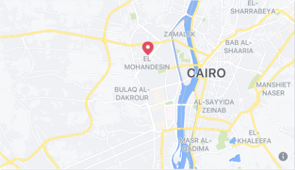

Because we are always at ABC Hospital our goal is patient comfort and to provide the highest quality medical service ABC Hospital provided care energy to 15 beds between concentrated and moderate care within precautionary measures in the end of strict measures for the patient before entering to ensure no suspected cases of Corona, standing by us to the patients who need care and not Corona cases and there are no mothers I am because of the lack of care based on the availability of Egypt under the current circumstances.
For reservation and inquiries
📞 01028486556Address
15 Amr Street, branch from Syria Street in Al‐Mahhandsin 